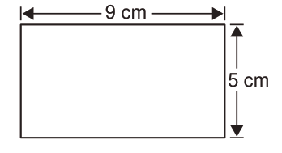

3. Divide the length of the rectangle into small strips of 1 cm each.
4. Identify squares with side length of 1 cm obtained in Step 3.
5. Count the small squares in Step 4 and write their number.
6. How many squares have you obtained?
7. What is the area of each square in square centimetres.
8. What is the area of the rectangle in square centimetres?
In Activity 1, you have learnt that the area of the rectangle is obtained by counting small squares in that rectangle. Thus, the area of the rectangle of your choice is equal to the number of small squares obtained. Also, the area of a rectangle is obtained by counting numbers of small squares in the length side and width side. If the number of small squares in the length side is multiplied by that of width side, the answer will be the total number of small squares in the rectangle. Thus, the area of the rectangle is length × width. That is the area of a rectangle = length × width.
Find the area of the following rectangle.

Therefore, the area of the rectangle is 45 cm².